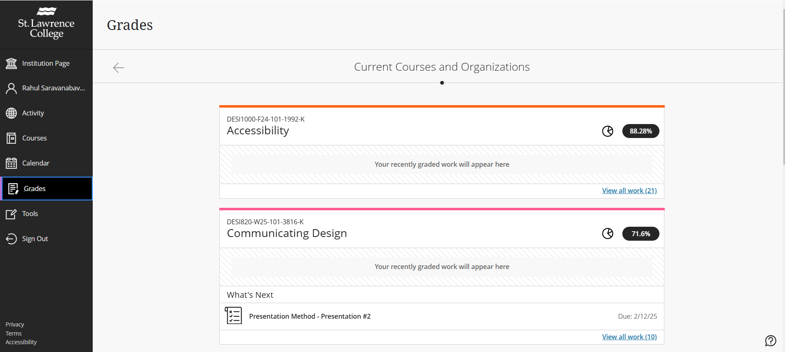

Redesign Proposal to Improve Student Experience in Viewing Grades and Feedback
This project aims to enhance the student experience by redesigning the Grades and Feedback section of the academic portal. The proposal is based on research conducted during the Winter 2025 semester, where we explored the challenges students face in accessing, interpreting, and utilizing their grades and feedback effectively.
The proposed design improves the student experience by offering a clear, structured, and intuitive interface that prioritizes accessibility and usability. Instead of navigating through multiple menus, students can view their grades, feedback, and progress insights all in one place through a dashboard-style layout. Grades are displayed with contextual explanations, including weightage and how they contribute to the final score, reducing confusion. Instructor feedback is integrated directly next to each grade, ensuring that students can access comments without searching through different sections. Additionally, visual elements like progress bars and trend graphs help students track their academic performance over time, making it easier to identify strengths and areas for improvement. The design also incorporates a notification system to alert students when new grades or feedback are available, ensuring they stay informed. By reducing cognitive load and simplifying navigation, this redesign makes the grading system more transparent, engaging, and user-friendly, ultimately supporting students in their learning journey.